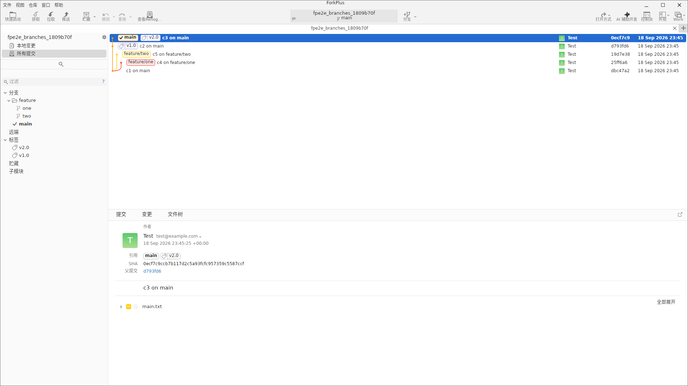
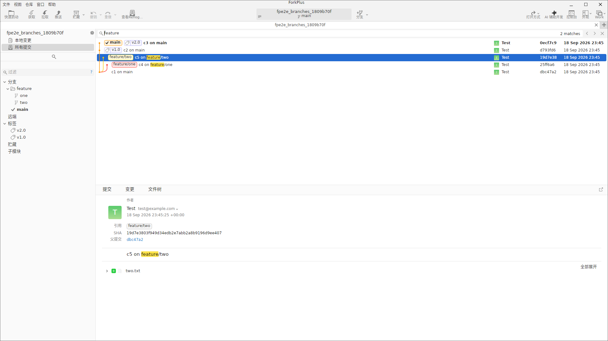
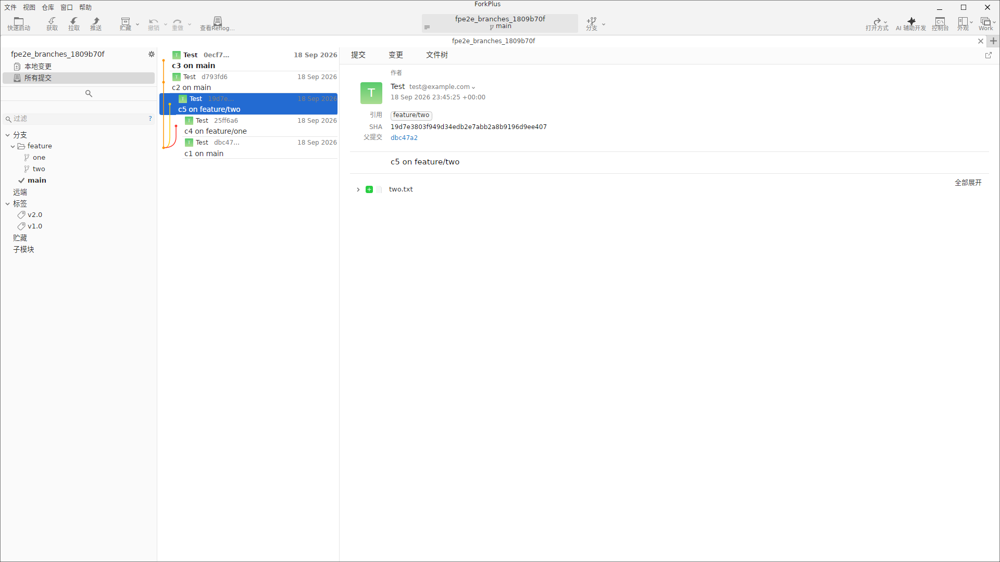

修订列表：图表视图
主界面中部的修订列表以「图表」方式展示全部提交历史。左侧的图形列用不同颜色的线条绘制分支的合并与分叉关系；每一行显示：
- 分支 / 标签标记：如
main、v2.0、feature/one。 - 提交说明：提交消息的第一行。
- 构建状态：绿色
Test徽标（CI 状态）。 - 提交哈希：7 位短哈希。
- 时间戳：提交时间。

说明：选中某行后，行高亮为蓝色；分支线颜色对应不同分支（如蓝色 = main、黄色 = feature/two、紫红 = feature/one），便于快速辨认提交归属。
选中修订行与变更文件列表
单击任意提交行即可选中。选中后，底部修订详情面板立即加载该提交的作者、日期、引用（分支/标签）、SHA、父提交与提交说明；在「提交」标签页内还会列出该提交涉及的变更文件，可点击「全部展开」查看详情。
c3 on main 行：底部详情面板同步加载该提交的元信息与变更文件列表修订搜索（上下文匹配）
在侧边栏顶部的搜索框输入关键词（如 feature），修订列表会在提交说明与分支/标签引用中做上下文匹配，并在右上角显示命中数量（如「2 matches」）。匹配到的提交仍保留在列表中（不缩小行集），以黄色背景高亮命中的文本。

feature：命中 2 条提交（c5 on feature/two、c4 on feature/one），匹配文本黄色高亮小贴士：清空搜索框即可清除匹配标记，列表恢复原样。按 Enter / F3 可跳转到下一个搜索结果，Shift + Enter / Shift + F3 跳转到上一个。
列表方向切换（横向布局）
修订列表默认采用「纵向布局」：列表在上、详情在下。通过工具栏/视图菜单可以切换为「横向布局」——列表收窄至中部、修订详情面板移动到右侧，更适合宽屏显示完整提交信息。

排序
修订列表默认按提交时间从新到旧排列。工具栏/上下文菜单中可调整排序方式，配合搜索可以快速定位目标提交。